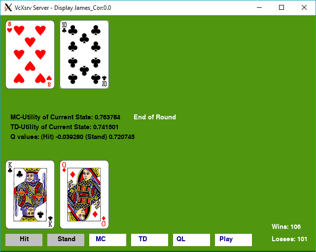

Blackjack is popular card game played in Casinos. There are many card counting techniques, but there are also simpler rules. This projects evaluates the success of one of these policies: "hit under 17".
We can use Monte Carlo Policy Evaluation to see how well this strategy does. All we're doing with MC Policy Evaluation is keeping track of each card hand, and how often hitting / standing led to a victory. However, there is a problem with using MC Policy Evaluation; it's slow and in other games it could get stuck in an infinite loop. Luckily, there's another form of policy evaluation called Temporal Difference Policy Evaluation.
TD Policy Evaluation is very similar to MC Policy Evaluation, in which we still calculate the value of hitting and standing based on each hand. TD policy Evaluation allows us to update these values on the fly, while we're still playing each simulation.

Lastly, in this project, I also implement an AI that attempts to create its own policy that is better than "hit under 17". Here, I use Q-learning to map the values of each hand and determine whether or to hit or stand. Even after several minutes of training, which equates to hundreds of simulations, the AI is only able to get barely above a 50% win rate. So, this really shows that you shouldn't play Blackjack, as even a computer with a ton of experience can barely break even.
Here's a video of the Blackjack AI: